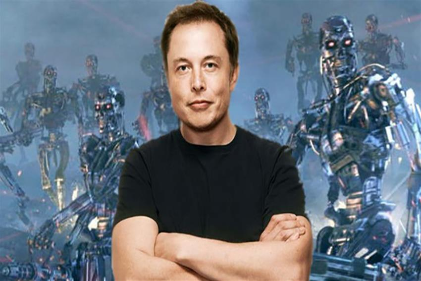
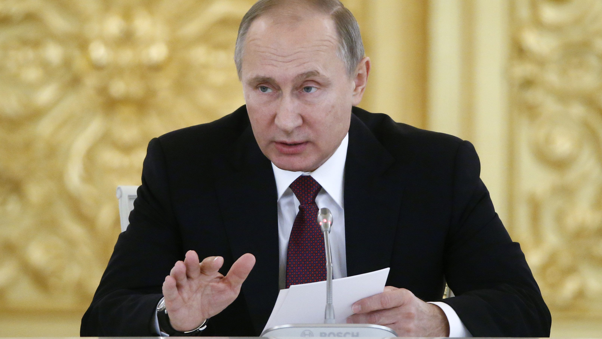

#Yazan: Vefik Fırat Akman
“ Vefik Fırat Akman With Small Robot "
“Yapay zeka, bir bilgisayarın veya bilgisayar kontrolünde ki bir robotun çeşitli faaliyetleri zeki canlılara benzer şekilde yerine getirme kabiliyetidir. "
Yapay Zeka'nın insan beyninin taklit etmek hatta daha gelişmişi olmaktır. Ortalama sağlıklı bir insan herhangi bir konuda o konunun gerektirdiği kadar çalışır. O sırada deneme yanılma veya farklı yöntemler kullanılarak o konuda uzmanlığa ulaşabilir. Sonrasında o konuda daha önce hiç karşılaşmadığı bir durumu önceki bilgilerini kullanarak cevaplayabilir. Hatta hiç bilmediği bir konuda hiç karşılaşmadığı bir durumda daha farklı hayat bilgilerini yorumlayarak o konuya da bir çözüm getirmeye çalışabilir.
Elon Musk gelecekte yapay zekânın insanları hükmedeceğini ya da eli silahlı yapay zekâya sahip robotların yeni Dünya Savaşı’nda büyük bir kaosa imza atacağına inanmaktadır. Sadece inanmakla da kalmayıp buna karşı önlemler almaktadır. Kendisiyle birlikte yapay zekâ üzerinde uzmanlaşmış 116 bilim insanı ile birlikte Birleşmiş Milletlere mektup yazmıştır. Bu mektupta eli silahlı yapay zekâya sahip robotların derhal yasaklanması gerektiğini belli etmişlerdir. Birleşmiş Milletler mektupta haklı oldukları yanların bulunduğunu ve bu konunun görüşüleceğini söylemiştir. Ayrıca yapay zekâların insanları hükmetmesine karşıda Neuralink adını verdiği şirket, elektronik cihazlara hükmedilmesini sağlayan beyin implantı geliştirmeye çalışmaktadır. Elon Musk’ın İddiasına göre şirket Bu implantı 4 yıl içinde bitirmek için yoğun mesai harcamaktadır. Buna karşın cephenin diğer tarafında çok daha güçlü bir isim yer almaktadır..
Rusya’nın lideri Putin yaptığı açıklamalarda “Yapay zekâ sektöründe lider olan ülke, aynı zamanda dünyayı da yönetecek” dedi.Buradan Putin’in yapay zekânın geliştirilmesinden yana tavır aldığını görmekteyiz. Bu uzun yıllar süregelen devletlerin silahlanma politikasının son ayağı yapay zekâ olduğunu göstermektedir. Yani yapay zekâ geliştirmenin şirketlerden dünyanın en güçlü devletlerine geçiş yaptığını göstermekteyiz. Böyle bir durumda artık yapay zekâ için yapılan yatırımlar hiç olmadığı kadar çok olacaktır. Önümüzdeki yıllarda yapay zekâ konusunda hiç görmediğimiz kadar büyük gelişmeler göreceğiz.
| Ülke Adı | 2014 | 2015 | 2016 | 2017 |
|---|---|---|---|---|
| Türkiye | - | - | 3 | 5 |
| Amerika | 5 | 8 | 10 | 13 |
| Rusya | - | 5 | 7 | 9 |
| İngiltere | 3 | 5 | 8 | 6 |
| Almanya | - | 3 | 5 | 8 |
*Ülkelerin Yıllık Yapay Zeka Yatırımları(Milyar $)
Artificial Intelligence Video From Youtube.